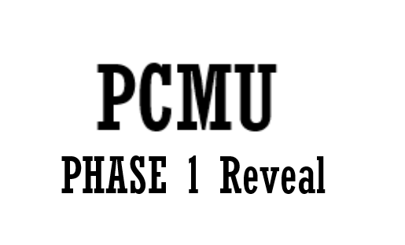

PCMU MCU Phase 1 Lineup!
Category: PCMU, Marvel. July 27, 2022

Today is the much anticipated (for me at least) release of the PCMU Phase 1 Lineup. So, without further ado, here's the comics that will appear in Phase 1.
- Captain America #1
- Iron Man #1
- Superhero Origins #1 - Hulk
- Doctor Strange #1
- Iron Man #2
- The Nation of Wakanda - One Shot
- Ant-Man #1
- Captain America #2
- Doctor Strange #2
- The Avengers Initiative #1
- The Avengers Initiative #2
- The Avengers Initiative #3
Once Doctor Strange #2 is released, Phase 2 dates will release, but Phase 2 will only be announced after The Avengers Initiative #2.